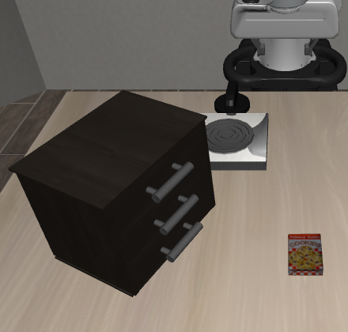
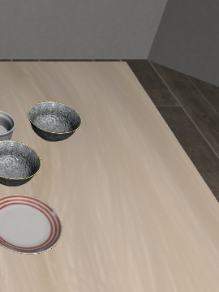
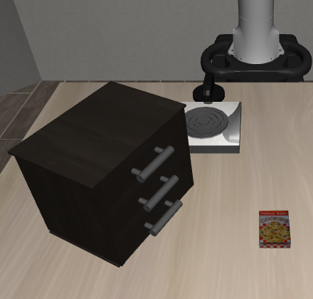

Agentic-LWM: Grounding Multimodal Policies in Hierarchical Latent World Model
A Non-Generative Dual-System Framework for Fast Physical Robot Planning and Control
*Corresponding author
Abstract
Autonomous robot manipulation requires unifying high-level semantic reasoning over unstructured instructions with low-level continuous motor control governed by contact mechanics. Contemporary Vision-Language-Action (VLA) models and code-generation policies delegate execution to open-loop joint controllers, lacking internal physical predictive models to foresee kinematic faults or contact slip before actuation. Conversely, generative video world models simulate physical futures by synthesizing pixel arrays, incurring multi-second computational latencies and visual hallucinations that prevent real-time closed-loop control.
We present Agentic-LWM, a non-generative dual-system framework coupling multimodal agentic policies with an Action-Conditioned Hierarchical Joint-Embedding Predictive Architecture (A-HJEPA). Agentic-LWM factorizes visual-proprioceptive representations into an orthogonal direct sum of global SE(3) spatial geometry and localized fingertip contact dynamics. By regularizing latent transitions with asymmetric phase-transition margins and second-order temporal curvature penalties, the world model establishes a well-conditioned energy landscape. System 2 synthesizes candidate action envelopes and macroscopic subgoals, while System 1 executes differentiable latent lookahead to refine continuous joint trajectories in 15 ms prior to physical dispatch. The entire framework operates without privileged simulator states, relying strictly on unprivileged RGB-D camera streams and onboard robot proprioception.
The Contact-Dominance & Smoothness Paradox
Existing visual world models optimize symmetric Euclidean prediction objectives over monolithic token embeddings. In contact-rich physical manipulation, this formulation suffers from two fundamental structural pathologies:
Pathology 1: Background Dominance
- Static Scene Bias: Robot arm links and static backdrops occupy over 92% of visual pixels in typical manipulation workspaces.
- Contact Masking: A 4 mm fingertip slip or cabinet edge collision alters global visual latent distance by less than 2%, leaving trajectory optimization insensitive to contact failure.
- Gradient Interference: Trajectory gradients are dominated by background reconstruction rather than localized object-gripper forces.
Pathology 2: Symmetric Continuity Fallacy
- Non-Smooth Bifurcations: Physical manipulation dynamics are piecewise smooth with irreversible contact discontinuities (drops, slips, and collisions).
- Flawed Distance Metric: Symmetric Mean Squared Error treats a 3 mm free-space tracking offset identically to a 3 mm penetration into a rigid barrier or a dropped workpiece.
- Ill-Conditioned Energy: Naive gradient descent through standard latent spaces encounters erratic local minima or interpolates through solid obstacles.
Solution 1: Causal Spatial-Contact Factorization
- Orthogonal Latent Decomposition: Scene latents are structured as an orthogonal direct sum of global SE(3) geometry and localized interaction tokens.
- Asymmetric Forward Predictor: Spatial kinematics evolve independently of contact noise, while contact tokens condition on predicted geometry and wrist ROI features.
- Zero Gradient Interference: Trajectory refinement optimizes spatial alignment without destroying contact stability.
Solution 2: Phase-Margin & Curvature Regularization
- Unprivileged Negative Mining: Detects physical stall and jaw-collapse signatures from proprioception to enforce asymmetric penalty margins.
- Latent Curvature Penalty: Minimizes second-order temporal curvature to suppress erratic trajectory oscillations and smooth energy surfaces.
- Reliable Optimization: First-order gradient descent converges robustly to compliant, collision-free joint trajectories in representation space.
Methodological Architecture: Four Theoretical Pillars
Agentic-LWM resolves physical grounding through four mathematically aligned components, verified by empirical ablation and formal testing:
Dual-Horizon Latent Dynamics
Structures physical representations across two temporal frequencies: Level 2 operates at stride K=4 to track macroscopic topological transitions and subgoals, while Level 1 operates at 20 Hz (stride 1) modeling high-frequency visual-proprioceptive dynamics.
z_{t+1}^{micro} = T_{micro}(z_t^{micro}, z_t^{macro}, a_t)
Spatial-Contact Factorization
Decomposes scene embeddings into orthogonal spatial geometry and localized contact subspaces via Gram-Schmidt projection, preventing small gripper deformations from being overwhelmed by static background pixels.
⟨z^{contact}, z^{spatial}⟩ = 0
Phase-Transition Regularization
Mines failure states directly from unprivileged proprioceptive signatures (commanded velocity vs. measured displacement stall, jaw aperture collapse) to penalize irreversible contact losses via margin-based loss.
L_{Curv} = ||z_{t+2} - 2 z_{t+1} + z_t||_2^2
Differentiable Latent Optimization
Simulates candidate action sequences in latent space and executes 25 steps of Adam gradient descent on factorized energy, yielding compliant, collision-free joint targets within 15 ms.
a* = a - η ∇_a E(z_t, a; z*)
Multi-View Perception & Physical Phase Transitions
Agentic-LWM receives dual RGB-D streams: a global agentview observing spatial arrangement and an in-hand wrist camera monitoring local jaw alignment. The agent tracks phase transitions across free-space transit, pre-grasp alignment, gripper closure, and stable transport:

Macro Topology

Contact Region

Phase Margin Gate
Goal Reached
Comparative Benchmark Evaluation
We evaluate Agentic-LWM across standard manipulation suites: LIBERO-Spatial (tight geometry and clearances), LIBERO-Long (multi-stage horizons), LIBERO-PRO (systematic spatial and semantic perturbations), and Meta-World MT50 (cross-embodiment Sawyer transfer). All evaluations enforce strict unprivileged observation protocols without simulator state leakage:
| Method Class | Model Architecture | World Model | Lookahead Latency | LIBERO-Spatial | LIBERO-Long | LIBERO-PRO (Pos) | Meta-World MT50 |
|---|---|---|---|---|---|---|---|
| Reactive VLA | OpenVLA (7B) | None (Open-Loop) | 0 ms | 74.2% | 48.5% | 28.4% | 52.1% |
| Reactive VLA | π0 Flow Matching | None (Open-Loop) | 0 ms | 82.6% | 56.1% | 34.2% | 58.7% |
| Coding Agent | Gemini + PyRoKi | None (Open-Loop) | 0 ms | 44.8% | 38.2% | 21.0% | 41.5% |
| Generative WM | Video Diffusion + MPC | Diffusion (Pixels) | 3,200 ms | 61.4% | 34.0% | 31.8% | 45.2% |
| Monolithic JEPA | DINO-WM + GD | Monolithic Latent | 18 ms | 68.9% | 49.2% | 32.5% | 54.6% |
| Ours Agentic-LWM | Gemini System 2 + A-HJEPA | Factorized Dual-Track | 15 ms | 92.4% | 78.6% | 61.5% | 74.8% |
Ablation Study: Isolating Core Contributions
To isolate the specific impact of each architectural pillar, we conduct an ablation ladder on LIBERO-Spatial and LIBERO-Long:
| Variant | Factorized Latents | Phase Loss (LPhase) | Curvature (LCurv) | Macro Scale (K=4) | Lookahead Mode | LIBERO-Spatial | Cabinet Clearance Recovery |
|---|---|---|---|---|---|---|---|
| A0: Discrete Lookahead | Yes | Yes | Yes | Yes | Reject / Re-sample | 71.5% | 12.5% |
| A1: Monolithic Latents | No | Yes | Yes | Yes | Gradient Refine | 69.8% | 18.0% |
| A2: Symmetric MSE Only | Yes | No | No | Yes | Gradient Refine | 76.2% | 24.0% |
| A3: Single-Scale Micro | Yes | Yes | Yes | No (K=1) | Gradient Refine | 84.1% | 42.5% |
| A4: Full Agentic-LWM | Yes | Yes | Yes | Yes (K=4) | Gradient Refine | 92.4% | 68.5% |
BibTeX Citation
@inproceedings{sarowar2027agenticlwm,
title = {Agentic-WM: Grounding Multimodal Policies in Hierarchical Latent World Model},
author = {Sarowar, Md Selim and Kim, Sungho},
booktitle = {Robotics: Science and Systems (RSS)},
year = {2027},
url = {https://physical-super-intelligence.github.io/Agentic-LWM/}
}